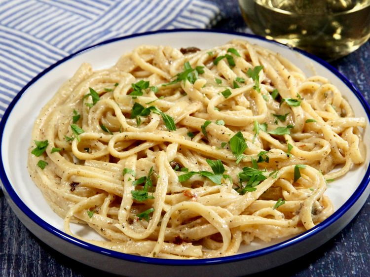

Creamy Cajun Pasta

Description
This simplified creamy Cajun pasta recipe gives subtle heat with hints of interesting spices. This is an easy, late night dinner that will have you craving seconds.
Ingredients
- 8 oz linguine
- 2 tbsp. unsalted butter
- 3 cloves garlic, minced
- 3 tsp. lemon juice
- 2/3 cup heavy cream
- 1 1/2 tbsp cajun seasoning
- 1/2 cup grated Parmesan cheese
Steps
- Bring a large pot of salted water to a boil. Add linguine and cook al dente according to package directions, 8 to 10 minutes. Drain, reserving 1/2 cup pasta water.
- Meanwhile, melt butter in a skillet over medium heat. Add garlic, and cook until fragrant, about 30 seconds. Pour in lemon juice, and bring to a boil. Reduce heat, and simmer, stirring occasionally, for about 3 minutes.
- In a small bowl, whisk cream, Cajun seasoning, flour, and Italian seasoning together until smooth. Gradually add to the skillet, whisking constantly until well incorporated, about 1 minute. Stir in Parmesan, stirring until slightly thickened, 1 to 2 minutes.
- Add linguine, and toss until well coated. If a bit thick, add pasta water a teaspoon at a time to reach your desired consistency. Season with black pepper, garnish with parsley or green onions, and serve.
Return to homepage